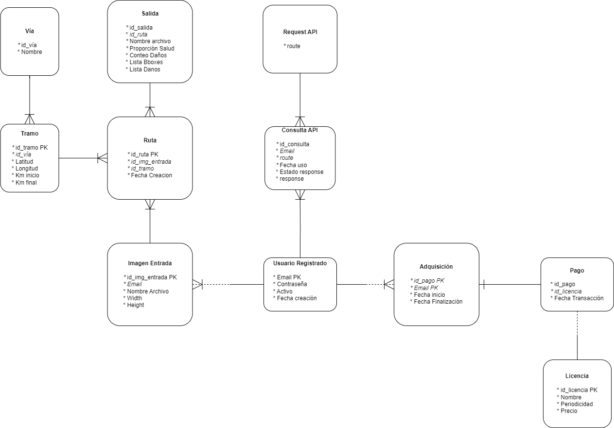

Con Healthy Road se busca cubrir cada uno de los 10 requerimientos funcionales diseñados en Análisis de requisitos del Prototipo [X23], para ello se realizó una búsqueda de un conjunto de datos de entrenamiento con el fin de satisfacer métricas de evaluación satisfactorias en el modelo.
El conjunto de imágenes más grandes encontrado fue el dado por un reto sobre detección de daños de carreteras de países como Estados Unidos, China, Japón, Noruega, República Checa e India [X24]. Así existan diferencias en los materiales y construcción en la pavimentación de carreteras en los anteriores países, al tener diversidad de esta, se puede llegar a una generalización suficiente para obtener un rendimiento viable en las carreteras de Colombia. Cada imagen cuentan con uno o muchos daños y su respectivo bounding box por cada anomalia en la carretera, la distribución por país, de cada imagen, se encuentra en ¿De dónde sacamos los datos de entrenamiento? del informe del prototipo [X25].
Observando las imágenes, obtenemos que son 12 GB aproximadamente de estas, y que tienen distintos escenarios que generar riqueza a la hora de realizar el entrenamiento:
Se realizó un modelo de datos, en la siguiente figura, donde se muestran las relaciones entre tablas y en el informe del prototipo de la aplicación, en el ítem Detalle de Requisitos de Bases de Datos [5] se puede observar ejemplos de dichos registros con sus valores.

En la siguiente tabla, se muestra el esquema general de la aplicación, desde las compras en BlueHost hasta la salida esperada del modelo.
| Conceptos | Descripción |
|---|---|
| Comprar licencias | Basado en un dominio de BlueHost, se realizará la compra de licencias de los 4 tipos inicialmente ofrecidos. |
| Alojamiento de datos |
Se guardarán los datos a través de Google Cloud y se accederán a ellos a través de MySQL. Se contarán con datos permanentes y temporales. Permanentes: Datos de los usuarios que adquirieron licencias, metadata de la imagen de entrada a la API, metadata de las predicciones del modelo, interacciones de los usuarios a la API, información de la vía asociada a la carretera. Temporales: Procesamiento de la imagen de entrada y salida; una vez el usuario descargue la imagen de salida, esta será borrada de la aplicación junto con su respectiva imagen de entrada. |
| Modelo | Teniendo presente la Metodología de IA mostrada en el Prototipo, se realizó Fine Tuning a un modelo YOLO versión 8. |
| Implementación de API | Basado en el Diagrama de Arquitectura mostrada en el Prototipo, el núcleo del programa es una API que recibe la solicitud del cliente con la imagen y, al procesarla, da un response con las predicciones y la imagen con las bounding boxes. Dicha implementación fue realizada con FastAPI debido a la facilidad de documentación en Swagger y capacidad ligera de despliegue en producción. |
*metadata: Información del nombre del archivo, nombre de la vía y tramo asociado para la imagen de entrada. Para la imagen de salida, el nombre del archivo procesado, la lista de daños y bounding boxes predichos.
Las pantallas mostradas en Diagrama de arquitectura del diseño del Prototipo [21] se implementarán a través de JavaScript y Html, los datos se obtendrán a través de consultas a base de datos y el flujo de información será una aproximación del modelo vista-controlador (MVC).